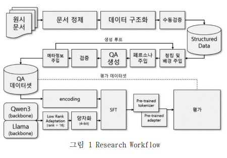

CO-AUTHORED RESEARCH · MULTILINGUAL CONVERSATIONAL AI
Building a multilingual multi-turn dataset for an international student support chatbot
A conference paper describing a source-grounded Korean, English, and Uzbek conversation dataset and a small-scale evaluation of fine-tuned language models for student support information.
Paper overview
The paper addresses gaps in domain-specific multilingual data for international students seeking practical information during settlement. It describes collecting documents on finance, insurance, living support, and university rules, converting them into structured source material, and using that material to generate multi-turn conversations in Korean, English, and Uzbek.
The authors then fine-tuned and compared several open language models using the generated dataset. The paper reports offline evaluation results; it does not report a live deployment or a study with international-student users.
Authorship: Co-author. The paper lists the author name “Robert Sweetha Malar.”
Dataset workflow
- Source documents were cleaned and organized into structured data, with source information retained for traceability.
- GPT-4o-mini prompt engineering generated context-grounded question-and-answer conversations, using consistent rules for Korean, English, and Uzbek.
- Prompts guided 3–6-turn conversations, including follow-up questions that depend on the previous turn. When the source did not contain an answer, the assistant was instructed to say the information was unavailable and redirect the user.
- Generated data was checked for language, turn count, role order, grounding, and out-of-domain handling.
The final dataset contains 6,000 conversations: 2,000 per language across four domains. The paper reports 275 out-of-domain examples in the final dataset.

Model evaluation
The authors fine-tuned Qwen3-8B, Qwen3-14B, Llama 3.1-8B Instruct, and Llama 3.2-3B Instruct using 4-bit quantization and LoRA. Evaluation used 60 manually prepared question-and-answer pairs: 20 in each language and five per domain.
For Llama 3.2-3B Instruct, the paper reports these base-model and fine-tuned scores:
| Metric | Base | Fine-tuned |
|---|---|---|
| BERTScore | 0.80 | 0.91 |
| ChrF | 0.28 | 0.71 |
| LLM-as-Judge | 0.37 | 0.64 |
The paper uses BERTScore for semantic similarity, ChrF for character n-gram overlap, and GPT-5-mini as an LLM judge of correctness, relevance, completeness, and fluency. These scores come from the paper’s 60-item evaluation set and should not be read as a measure of real-world student outcomes.
Scope and limitations
The reported study is limited to four information domains, three languages, and a small manually prepared evaluation set. The paper identifies domain and language expansion and real-user feedback as future work. It therefore supports a research-stage dataset and model evaluation claim, not a claim that the chatbot is proven reliable for student use.
Recognition & paper
Best Paper Award, HLLT 2025 for “Building Multilingual Multi-turn Dataset for International Students Assisting Chatbot.”
Authors listed in the proceedings: Dave Maxuell, Sungwon Lim, Robert Sweetha Malar, Doliev Jasurbek, and Pum-Mo Ryu.
View the paper on KoreaScience ↗